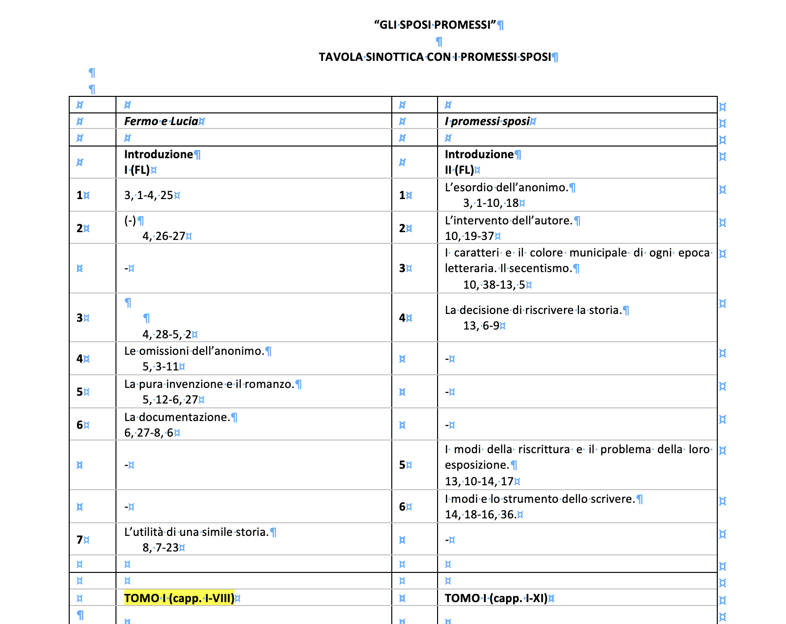
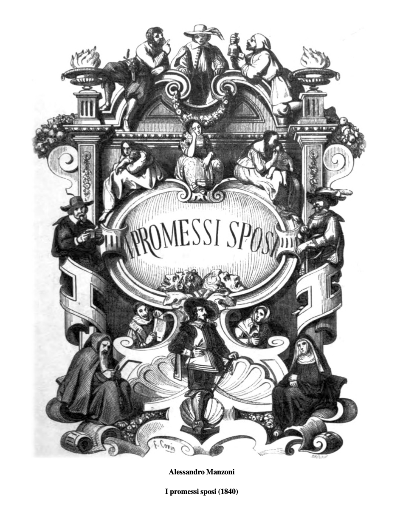
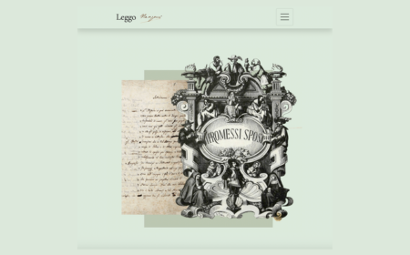
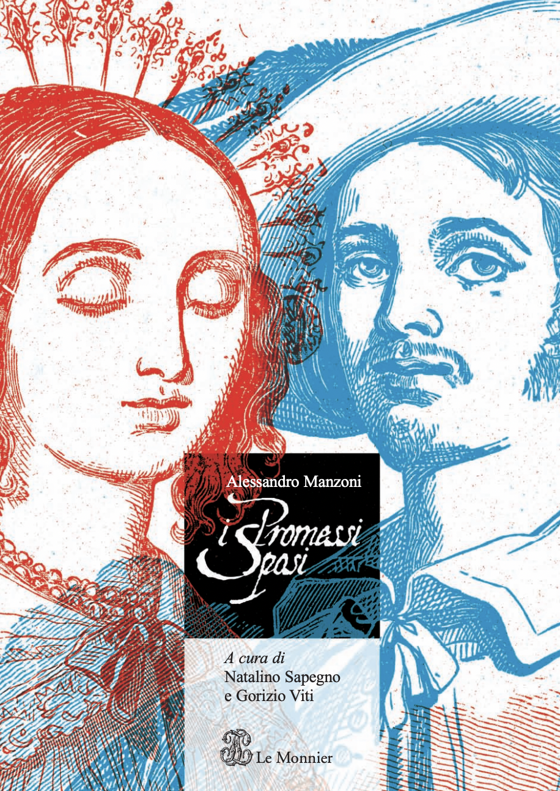

Manzoni Storytelling si concentra sul romanzo
I Promessi Sposi, scritto da Alessandro Manzoni e pubblicato nella sua edizione definitiva nel 1840.
Il progetto è pensato per un
pubblico giovane e curioso, in particolare per te che sei uno
studente di seconda superiore, che conosconi già il romanzo ma desideri approfondirlo in modo più chiaro, visivo e interattivo, sfruttando le potenzialità della tecnologia e delle digital humanities.
Per questo motivo, il sito ha un’impostazione didattica, con strumenti pensati per aiutare a
comprendere, memorizzare e rielaborare i contenuti.
Il romanzo, considerato un grande capolavoro della letteratura italiana, è
già stato ampiamente studiato e analizzato ed è stato oggetto di numerosi progetti, sia analogici sia digitali.
Nel caso di
Manzoni Storytelling, tutto ha avuto origine da una preziosa
tavola sinottica, realizzata nel secolo scorso da filologi e studiosi di letteratura e messa gentilmente a disposizione dalla
docente universitaria Paola Maria Carmela Italia.
Questa tavola mette a confronto
Fermo e Lucia e
I Promessi Sposi, suddividendo entrambe le opere in sequenze narrative.

Fig. n. Tavola sinottica dei romanzi Fermo e Lucia e I Promessi Sposi, suddivisa in sequenze narrative.
Nonostante sia stata realizzata in un periodo precedente all’era digitale, la sua
grande utilità e il suo potenziale sono risultati subito evidenti.
L’obiettivo del progetto è infatti quello di rimodernizzare e digitalizzare questa importante fonte, rendendola più accessibile e fruibile per te che sei uno studente di oggi.
Manzoni Storytelling offre così una
prospettiva nuova e originale rispetto ai progetti più tradizionali, che ti permette di studiare il romanzo concentrandoti su aspetti spesso lasciati in secondo piano, in particolare:
- l’aspetto temporale, e soprattutto il rapporto tra fabula e intreccio, che rende il romanzo unico e coinvolgente;
- il legame tra fatti storici reali ed eventi inventati, che si intrecciano nel racconto e definiscono I Promessi Sposi come romanzo storico.
A supporto dei contenuti della tavola sinottica sono stati utilizzati
altre fonti fondamentali:
- I Promessi Sposi (edizione 1840) in formato PDF, utilizzato per arricchire e verificare i riassunti delle sequenze narrative,
- Il sito Leggo Manzoni, per usufruire del testo de I Promessi Sposi (edizione 1840) in formato digitale,
- I Promessi Sposi, a cura di Natalino Sapegno e Goizio Viti, punto di riferimento per il linguaggio, la modalità di esposizione dei contenuti e la progettazione degli esercizi di verifica.

Fig. n.1. PDF de I promessi sposi (Quarantana)

Fig. n.2. PDF di I promessi sposi (LeggoManzoni)

Fig. n.3. PDF di I promessi sposi curato da Natalino Sapegno e Goizio Viti